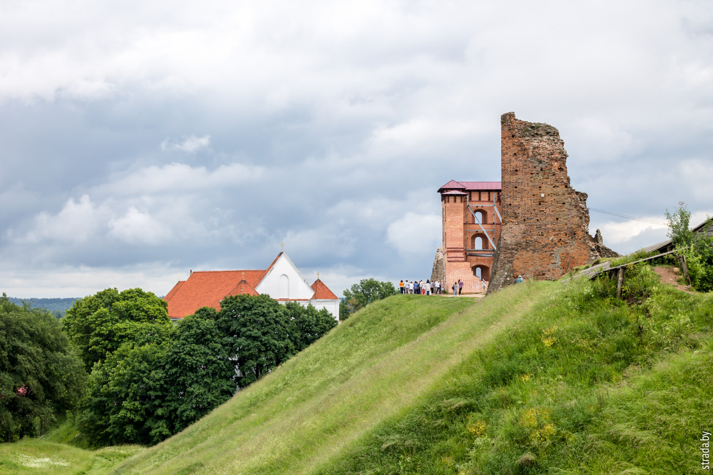

.
Новогрудский замок

Новогрудский зaмок — замок, некогда находившийся в городе Новогрудок, был
одним из ключевых опорных пунктов и одной из мощнейших крепостей в Великом
княжестве Литовском, ныне его руины располагаются на склонах замковой
горы. Уникальный памятник оборонительной архитектуры эпохи средневековья,
древний центр Новогрудка, резиденция великих князей Великого княжества
Литовского. Существовал с XIII по XVII века. Сохранились фундаменты
укреплений с постройками и руины башен.